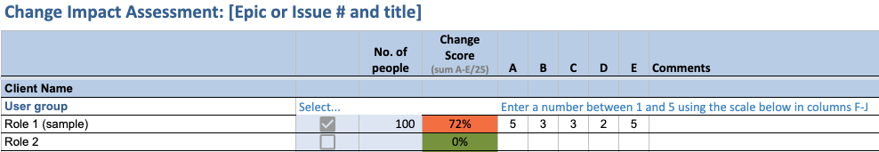

Practical tools for planning, monitoring, and measuring your change program
TL;DR
- A nimble and measurable change management approach is more effective when product updates and fixes are released daily.
- See examples of three tools that effectively plan, monitor, and measure change-related work.
It’s not uncommon for projects to ignore the people side of change as they focus on the technical aspects of the work. Technical success is often equated with project success.
What we at CivicActions have found, however, is that success calls for a different recipe. We quantify how our content management system (CMS) updates can impact users, and then embed a change management approach in our Agile development processes to support those transitions. This targeted effort is designed to help CMS users create better content while reducing demand on the help desk. Our project with the Department of Veterans Affairs (VA) is a case in point.
More than 1,000 VA employees are expected to create online content for VA.gov using a new Drupal CMS. This initiative introduces two key changes for these employees. For some, the change is a departure from a familiar CMS platform. For the others, particularly in the 300 community-based Vet Centers, the change for employees can be creating web content for the first time.
Together with partner digital services firms AgileSix and Friends From The City, CivicActions is making multiple CMS product changes for the VA every business day. The product teams follow Agile methods for managing the backlog, refining the scope of future sprints and reporting on work completed in each sprint with demos and retros.
Changes we make help fortify accessibility compliance and system reliability. Other changes that will be noticed by editors include:
· UX
· Content Design
· New Back-End Features
As the project continues, editors will experience frequent, and potentially overlapping, changes in how they work.
Outside the CMS work they are expected to do, VA editors also may experience organizational change (such as a reorg) and/or significant personal change (health- or family-related). In our project we also have to be mindful of the major dates on the VA calendar, such as Veterans Day, that greatly impact the editor’s to-do list. It’s the cumulative impact of change on our users that we as designers need to better understand when we introduce product changes.
Anticipating product change impacts
Before we could think about our change management approach in the VA Drupal project, we needed a deeper understanding of the impacts of our product changes on CMS editors:
- How would a product change impact the day-to-day work by an editor?
- How do they set their priorities?
- How different or difficult is a Drupal feature to learn and use?
The line of questioning that product teams typically use to research their users’ experience can be broadened to better understand change impacts.
As each new organizational section of the VA was introduced to Drupal, consultations with key stakeholders helped us calculate the overall impact of the Drupal migration. The goal of this assessment was to determine:
- The actual change being experienced (previous CMS users vs. brand new users)
- Which editor roles would be the most impacted and why
- How many people are in each role
CivicActions created a template for listing the editor type by section, and then assigned a score of 1 to 5 (5 being high) on the degree of change across 5 dimensions:
- Type of change
- Degree of process change
- Degree of technology change
- Degree of job role change
- Timeframe for the change

With the scores in front of us, we could easily see which group would be most severely impacted, and then calibrate our efforts with available capacity for that group. For example, a larger group with a lower change impact score would require different communications and engagement tactics than would 1 or 2 people with a 90% score. Quantifying change impacts is a smart way to target your change management program with available resources.
To supplement the assessment, we added a short set of questions to our team’s research plan template that would reveal more of the impact of change on the day-to-day work of CMS editors.
Change management planning in Agile
Our product managers (PMs) typically lead the quarterly planning exercise across 2 to 3 sprints. Each PM charts their quarter’s priorities with the product owner and captures them in one of our online tools with corresponding epics.
Once we had access to the PMs’ quarterly plans, the change management plan came together by:
- Consulting with each PM to get details on the epics that have change management implications
- Pulling those lists into a master change management tool in Airtable
- Assigning t-shirt sizing for each epic to represent the size of the change management effort, and a corresponding story point for level of effort
The completed data set gave us a 30-thousand-foot view of our work for the quarter, and a place to capture updates and measurement data. More importantly, we also could see when PMs had simultaneous changes planned, and alert them to the possible overload on the editor community.
At the sprint level, the planning scope narrowed to what epics and associated issues will be completed in those 2 weeks. We created the change management set of issue templates in GitHub that PMs could use for any given epic.
Tracking and measuring change management progress
One of the new product features we created for the VA CMS limits what editors can do with a particular set of content. This change could require an editor to spend 30 minutes or more to redo content they previously had published as unstructured content (rework isn’t a top priority for most folks.) To make this transition as pain-free as possible, our team not only tested the new CMS design with editors, we also tested the communications to be sent to all editors before the launch, the day of the launch and post-launch with a small group of editors for clarity and understanding.
This communications strategy was more complex, given the beta testing cycle before launch. To account for all the moving parts, we used a service design map to see how our product rollout needed to be supported by change management, and vice versa. Validating this map with our Product Owner, key stakeholders, user support and engineers helped not only to identify gaps and opportunities for a smoother transition, but also to clarify roles and responsibilities. We updated the map frequently to adjust timelines and identify any new roadblocks. Each box in the map can map to a specific sprint issue, which signals to the product owner when the work will be completed.
After the launch of the new content type, we used our CMS audit tool to gauge how many editors had created the new content. The audit data was forwarded to our Product Owner and key stakeholders for discussion about how to strengthen the communications and reinforce the mission of the feature change (better services to Veterans) with demos and Q&A sessions with CMS editors in MS Teams.
As a more formal measurement strategy, our team uses:
- Content audits, to see alignment with VA policies and standards
- The number of support tickets, to gauge editors’ ability to use the feature without the need for the help desk
Since we had set up the master change management Airtable to produce performance reports for each epic, it was easy to export a nicely formatted quarterly report of all epics for the Product Owner.
It’s a sprint and a marathon
Keeping change management continually at the front and center of large-scale technology projects has been shown to correlate with greater project success. For our VA work, biweekly syncs with a product owner and key stakeholders ensured we had a regular time to review our performance metrics. Our stakeholders shared important context in these meetings that revealed the potential causes for users not liking or using a particular feature. The discussion explored other options for communications or training and set a new course of action with concrete next steps for future research or product design.
Meantime, the change management data shared with the product team spurred other innovations in the feature set to improve the editor experience within the CMS. As each new piece of data about the editor experience was passed on to the team, it could inform the next quarter’s planning, or what designers and engineers would consider in the next sprint.
We can’t force other people to accept our product changes. We can, however, anticipate how our changes will impact people, pay attention to how they respond to our change, and be ready to pivot.